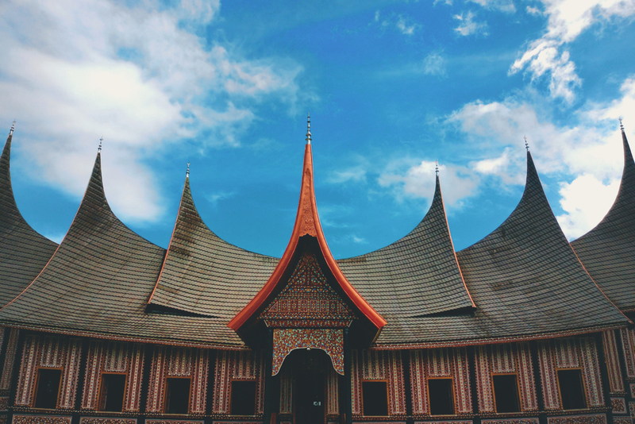

5 Tempat Wisata Bersejarah di Kota Padang
Kota Padang menyimpang banyak bangunan bersejarah yang usianya sudah ratusan tahun. Buat pecinta sejarah, tempat-tempat ini nggak boleh terlewatkan saat berkunjung ke Kota Padang. Selain bangunannya yang ikonik, tempat-tempat di bawah ini menjadi saksi bisu perkembangan di Padang kota.
Kota Padang Panjang memang salah satu kota besar di Indonesia yang berperan besar dalam perkembangan sejarah bangsa Indonesia. Dulunya kota ini dikenal sebagai pelabuhan dan kota dagang pada masa kolonial. Di sini pula banyak tokoh besar lahir. Tak heran Padang menyimpan banyak bangunan peninggalan sejarah yang masih terjaga hingga saat ini. Tempat-tempat di bawah ini bisa kamu jadikan referensi untuk wisata sejarah di Kota Padang.
1. Museum Bank Indonesia Padang (De Javasche Bank)Museum Bank Indonesia Padang atau dalam bahasa Belanda disebut De Javasche Bank merupakan bangunan tua yang dulunya berfungsi sebagai bank. Pada masa kolonial Belanda, bangunan ini merupakan kantor DJB Agentschap cabang Padang. Bangunan ini sudah berdiri sejak 1864 dan setelah Indonesia merdeka, gedung ini dialihfungsikan sebagai Bank Indonesia cabang Padang. Sayangnya Bank Indonesia Padang hanya beroperasi sampai tahun 1977 dan kini bangunan ini berubah menjadi Museum Bank Indonesia Padang.
2. Padangsche SpaarbankPadangsche Spaarbank dibangun sekitar tahun 1908 pada masa kolonial Belanda. Bangunan ini punya gaya neo klasik khas Eropa yang populer pada awal abad 20. Terdapat tiga jendela besar di lantai dua serta pintu masuk yang sangat besar yang kanan-kirinya terdapat jendela besar pula.
Wisata Kota Padang bersejarah yang satu ini terletak di ujung Jalan Batang Aru. Dulunya Padangsche Spaarbank sempat difungsikan sebagai kantor Bank Tabungan Sumatera Barat, namun pada tahun 1994 hingga 2009 tepat ini berubah fungsi menjadi hotel. Kini Padangsche Spaarbank difungsikan sebagai tempat wisata sejarah yang bebas dikunjungi wisatawan.
Gedung Balai Kota Padang merupakan tempat wisata di Padang yang bersejarah selanjutnya. Lokasinya terletak di Jalan M. Yamin, Padang Barat, Kota Padang. Bangunan ini mulai dibangun pada tahun 1931 hingga 1936 yang artinya memakan waktu hingga 5 tahun. Gedung Balai Kota Padang memiliki gaya arsitektur art deco yang didesain oleh arsitek asal Belanda bernama Thomas Karsten.
4. Kerajaan PagaruyungKerajaan Pagaruyung merupakan salah satu kerajaan tua yang pernah menguasai kawasan Sumatera Barat. Meskipun tidak diketahui pasti kapan kerajaan ini mulai berdiri, namun berdasarkan prasasti Batusangkar diketahui bahwa Adityawarman pernah menjadi raja di kerajaan Pagaruyung. Namun kerajaan ini runtuh akibat Perang Padri. Meskipun sudah runtuh, nama Kerajaan Pagaruyung diabadikan dalam sebuah museum kebudayaan.
Kerajaan Pagaruyung merupakan tempat wisata kota Padang yang bersejarah. Lokasinya terletak di Jalan Diponegoro No.10, Padang Barat, Kota Padang. Tempat ini memiliki koleksi yang cukup lengkap tentang kebudayaan Minangkabau dan sejarah Padang.
Masjid ini berusia sangat tua karena sudah ada sejak 1843. Meskipun sudah berusia ratusan tahun Masjid Muhammadan masih berdiri kokoh hingga saat ini. Masjid yang memiliki sentuhan budaya India ini dibangun oleh muslim India yang dulu tinggal di kawasan Pelabuhan Muara. Lokasi Masjid Muhammadan terletak di Jalan Pasa Batipuh, Pasa Gadang, Padang Selatan, Kota Padang.